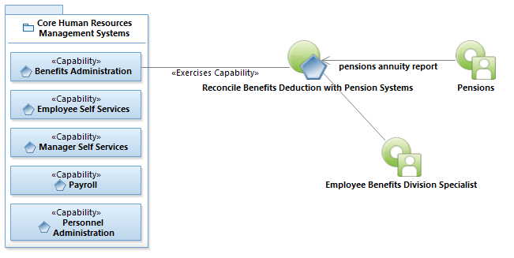
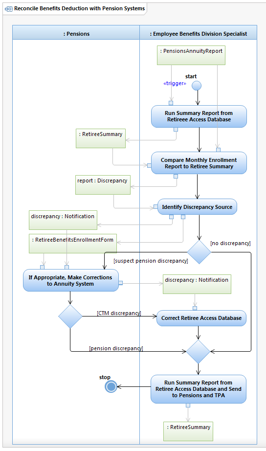

Use Case Model: Reconcile Benefits Deduction with Pension Systems
Architect: Rob Byrd, Chief Enterprise IT Architect
Date Last Modified: 07/20/2012
User Review: Karen Haywood, Division Program Manager
Date: 07/20/2012
Pension agencies send monthly Pensions Annuity Reports to the Employee Benefits Division Specialist. The Employee Benefits Division Specialist compares the report to the Retiree Summary generated by the Retiree Access Database. Discrepancies, if any, are identified and corrected. Once corrected, the Employee Benefits Division Specialist sends updated Retiree Summary report to Pensions and Third Party Administrator.
Follow link to Role Definitions

Use Case Model: Reconcile Benefits Deduction with Pension Systems

Activity Model: Reconcile Benefits Deduction with Pension Systems